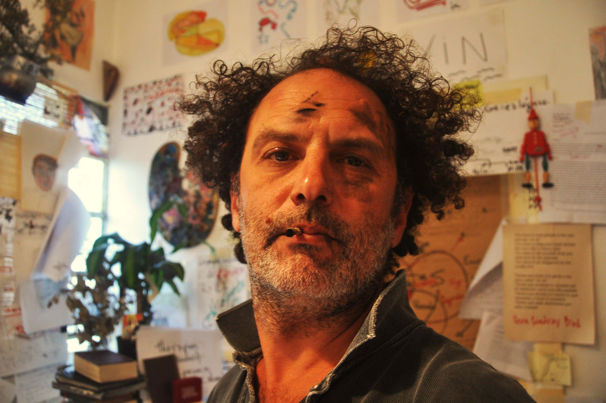

Iosi Havilio (Buenos Aires, 1974) es escritor, artista plástico y docente. Se ha formado en filosofía, música y cine. Ha publicado las novelas, Opendoor (Entropía, Buenos Aires, 2007), Estocolmo (Mondadori, 2010), Paraísos (Mondadori/Caballo de Troya, 2012), La Serenidad (Entropía, Buenos Aires, 2014), Pequeña flor (PRH, 2015), Jacki o la Internet profunda (Socios fundadores, 2018), Vuelta y vuelta (PRH, 2019) y Buuuh! (entropía, 2023). Sus obras han sido traducidas al inglés, al francés, al italiano, al turco y a otros idiomas. También colaboró en varias antologías, puestas teatrales y adaptaciones cinematográficas. En 2011, 2016 y 2022 obtuvo la Beca del Fondo Nacional de las Artes (Arg.). Ha participado en numerosos encuentros, ferias, festivales y residencias artísticas en distintas partes del mundo. En noviembre de 2023 realizó su primera muestra individual como artista plástico en el marco de la Línea Piensa en el Centro Cultural Borges (Bs. As.): Sobre el arte de la novela. Como docente, ha dado talleres en un sinnúmero de espacios e instituciones dentro y fuera de la Argentina. En la actualidad es profesor en la carrera de Artes de la Escritura de la UNA (Universidad Nacional de las Artes, Arg.) y en la Maestría de Escritura Creativa de la UNTREF (Universidad Tres de Febrero, Arg.). Igualmente anima cursos y clínicas de escritura particulares alentando el cruce de prácticas y lenguajes. Mientras trabaja en su próxima novela, prepara una muestra que vincula narrativa y escrituras asémicas. Vive en Buenos Aires, tiene dos hijos preciosos.
IOSI HAVILIO
BIO
